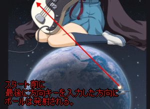

| ステージメモ |
| 涼宮ハルヒ 1 |
1.中スタート
2.中リターン
3.左リターン
4.左リターン
5.中リターン
・最初の中リターン後、すぐに左端に行かないと位置がズレて失敗します。1機目は壁に穴を開ける程度でもかまいません。
・1回失敗してリスタート時に、壁を抜けて奥にボールが行くようにスタートしましょう。 |
| 涼宮ハルヒ 2 |
1.中スタート
2.中リターン
3.中リターン
4.中リターン → ここでアイテムが落ちてきます。
5.中リターン
・中からスタートし、そのまま停止していれば4回はリターンできます。途中でアイテムを取れば変化。通常なら5回目のリターンは中央やや左。良いアイテムが出れば取得し、停止リターンにこだわる必要はありません。
|
| 涼宮ハルヒ 3 |
1.中スタート
2.右リターン → ここでアイテムが落ちてきます。
3.右リターン
・3回目のリターンは中央。その後に高確率で手前の塊に当たるのですぐ左へ。位置によっては、また塊に当たるのでそのまま左へ。 |
| 涼宮ハルヒ 4 |
1.左スタート
アイテムが2個落ちてくる。
リターンは左端からやや右ですが、リターンしたらすぐに右に移動しないとアウト。最初にアイテムが落ちてくるときにハルヒやキョンの妹で一気に壊したほうが良いかもしれません。 |
| 長門有希 1 |

・1手目に左方向にボールを発射し、ギターの隙間を抜ける。パドルの右端が地球の輪郭に触れるくらいの位置がベスト。位置合わせの最後は左を入力していないと、ボールが右に発射されるので注意。
・ボールはしばらく奥で跳ね返り続け、アイテムが数個落ちてきます。 |
| 長門有希 2 |
1.左スタート
2.左リターン
・2回目のリターンは右の方ですが、右端まで行くと行き過ぎ。パドル1個分のスペースを空けて待ちましょう。
・リスタート時には帽子の奥に行くよう狙いたい。 |
| 長門有希 3 |
1.中スタート
2.中リターン
3.中リターン
4.中リターン
5.中リターン
6.中リターン
・中央からスタートしたら、そのまま停止していると5リターンできる。6回目はやや右に抜けるので移動が必要。途中でアイテム回収で移動すると5リターン不可になりますが、良いアイテムが来たら停止リターンは諦めてアイテムを回収しても良いでしょう。 |
| 長門有希 4 |
1.左スタート → ここでアイテムが落ちてきます。
2.左リターン
3.左リターン → ここでアイテムが落ちてきます。
4.左リターン
・4回目のリターンは中央よりやや右。固定リターンにこだわらず、アイテム取得も考えましょう。 |
| 朝比奈みくる 1 |
1.中スタート
2.中リターン
3.左リターン
4.右リターン
5.左リターン
6.右リターン
・6回目のリターンは中央からやや左。最初の中リターンした後、左右に連続のリターン、焦って位置がズレると失敗。 |
| 朝比奈みくる 2 |
1.中スタート → ここでアイテムが3個落ちてきます。
・最初の1発でアイテムが3個落ちてくるので楽になります。アイテムで軌道変化が無ければ、リターンは中央と左の間くらいです。 |
| 朝比奈みくる 3 |
・このステージはブロックが遠く、中央に固まっているので簡単です。
・最初の1手は中か右なら余裕を持って見られます。右からスタートして中央でリターンするのが無難。 |
| 朝比奈みくる 4 |
1.左スタート
2.右リターン
3.右リターン
・2回目の右リターンしたらすぐ中央へ移動してリターン。 |